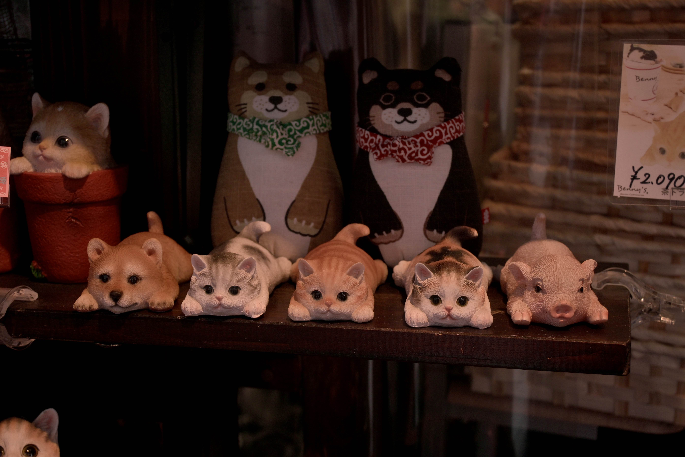

静寂の中にある、
一瞬の美を掬い上げる
一瞬の美を掬い上げる
PHOTOGRAPHER / RIN TANAKA




田中 凛 / 19
日常の中にある、静けさや余韻を大切にしています。
その一瞬にしかない空気を Nikon Z 50II と共に記録しています。
目に映るものをただ写すのではなく、
心で感じた湿度や温度を、一枚の静止画に。
その一瞬にしかない空気を Nikon Z 50II と共に記録しています。
目に映るものをただ写すのではなく、
心で感じた湿度や温度を、一枚の静止画に。
Gear
Nikon Z 50II
NIKKOR Z DX 16-50mm f/3.5-6.3 VR
Area
Kanto, Japan
Subject
Flower / Street / Snap
GET IN TOUCH
rin.tk.uni@gmail.com